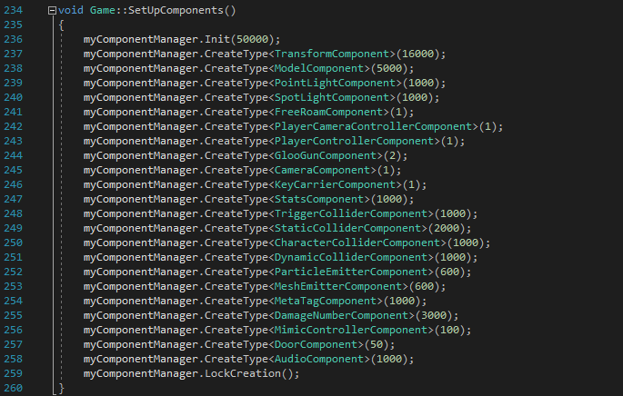
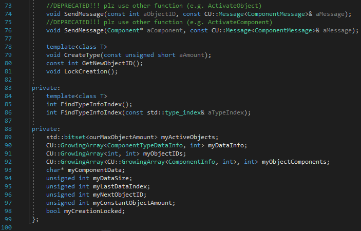
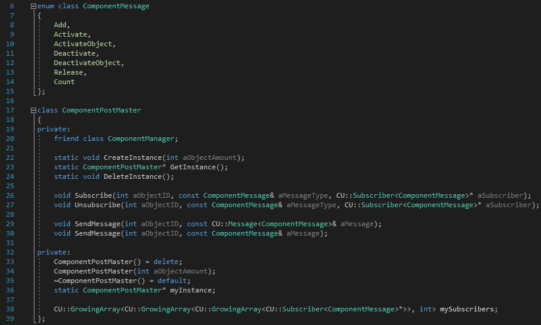
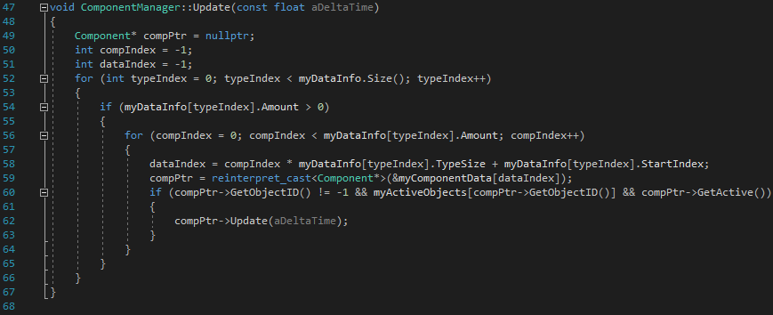
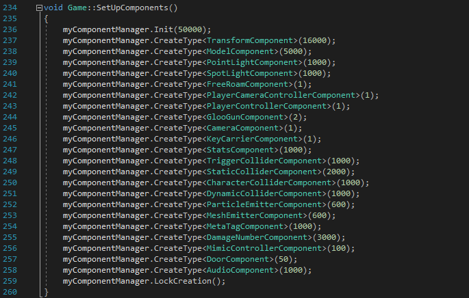
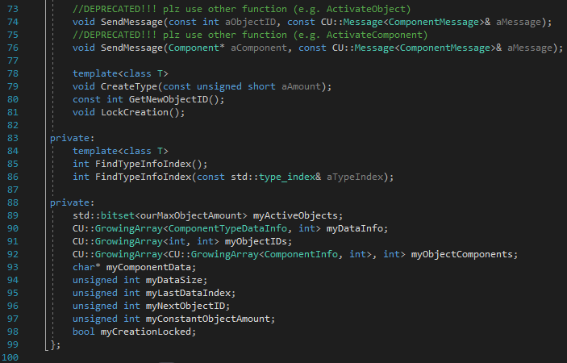
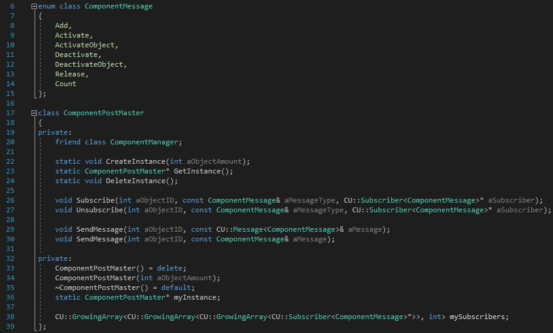
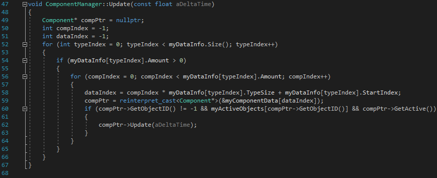
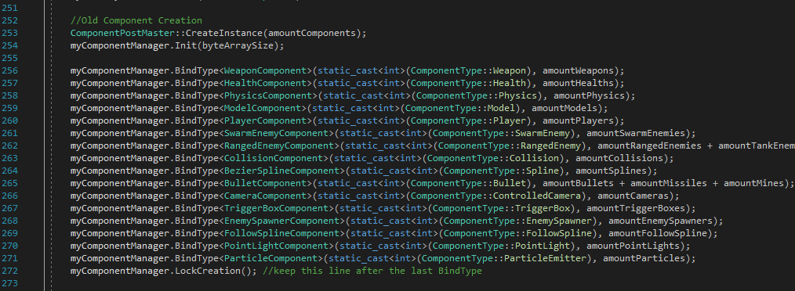

Component System
This component system have currently been used in 3 games and gone through several itterations.
I'm going to go through how it works and why I rewrote a big part of it when we began working on the second game.
 







Structure
When I decided to make a component system I knew only that I wanted a single array of components, and that I wanted objectIDs rather than an object class.
It took a couple of days to figure out how I wanted the structure and how I would make it, but after I figured out how it only took a couple more days until it was ready to be used.
The system consists of the manager, the post master and components.
At first the manager only had two things, one big chunk of data containing the components, and a list of info about each component type.
The type info is used to parse the data in order to use any components inside. Now the manager also handles the objectIDs, has more features and is much more user freindly.
The reason I made a post master was to not search through all components of it's type whenever a component is activated, deactivated, added or released.
I later added an array for every object containing the type and index of components added to the object,
therefore I could probably now remove the post master and replace ReceiveMessage with OnActivate, OnDeactivate, etc.
Components
All components are derived from the component base class, and should never be created by anyone other than a ComponentManager.
The base class contains its component ID, its objects ID, if it's active or not and a proxy for the ComponentManager that created it.
Components contains both the functionality and the data it needs, unlike ECSs (Entity Component Systems) that instead seperates the functionality (system) and the data (component).
The reason I decided to not make an ECS is mostly because the only component system I've used is the one in Unity,
which isn't an ECS and I later used it more directly as a reference.

User Experience
During the development of the first game using this system, I came to understand that the system wasn't very user friendly,
specially how you get other components and add new components, so a big part needed to be rewritten.
When figuring out how I was going to make it more user friendly, I looked at Unitys component system as referance.
I used it even though some parts of their system isn't the same as mine, like I use object IDs while they have an object class.
The most notable design from unity is how to specify component type.
Before, you used an enum converted to an integer to specify a component type, that you choose to when creating the components of that type,
and now you just use the component type as template.
I also noticed that other programmers confused component IDs and Object IDs, so I tried to hide it as much as possible and make a clearer distinction between them and object IDs.
I also looked at Unitys component system when designing other parts of the system,
like using a transform component instead of every component having their own transform.
Prefabs
Half way through development of the second game using this system,
we were in need of a easy way to create objects with the correct components and correct data in said components, preferbly as fast as possible.
So I took a day to design a simple system for it and another day to code it.
At first it was just a .txt file with strict structure and was annoying to add new components,
but it was ready to be used after two days and goal was to make it quickly.
I went back later and changed it to use json instead, which took longer to load but was way more flexible and more user friendly.
Also, an important part of the prefabs is that they are now generated by the level designers from unreal,
which makes it easy for them to just add some models and collision boxes together when they need it.